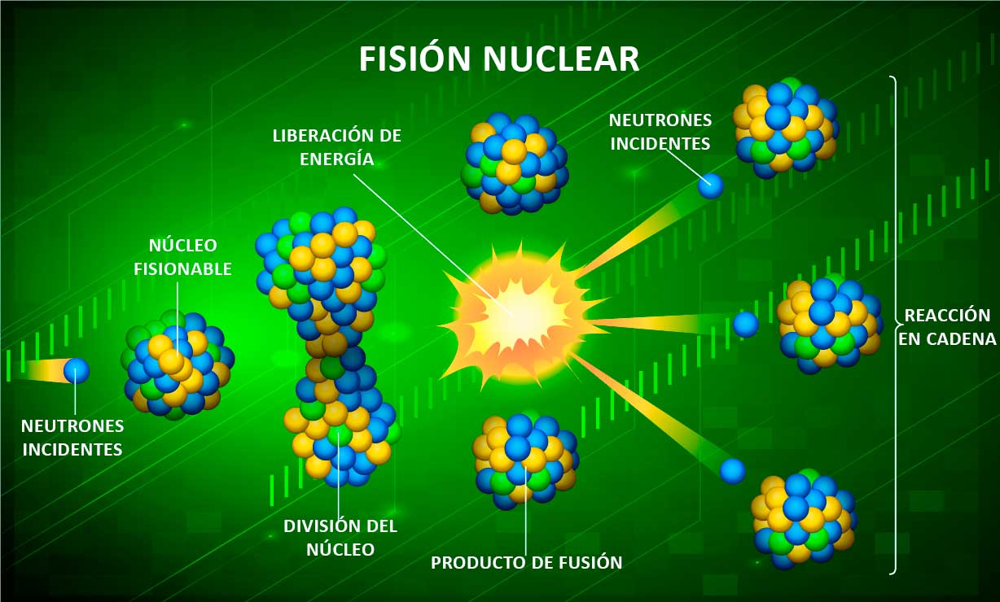
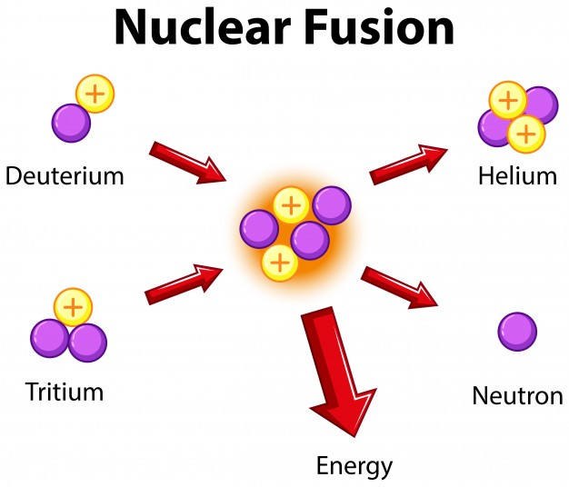

Fundamentos de la Energia Nuclear
Fisión Nuclear
La fisión nuclear es la reacción en la que el núcleo de un átomo pesado, al capturar un neutrón incidente, se divide en dos o más núcleos de átomos más ligeros, llamados productos de fisión, emitiendo en el proceso neutrones, rayos gamma y grandes cantidades de energía.
El núcleo que captura el neutrón incidente se vuelve inestable y, como consecuencia, se produce su escisión en fragmentos más ligeros dando lugar a una situación de mayor estabilidad. Además de estos productos, en la reacción de fisión se producen varios neutrones que al incidir sobre otros núcleos fisionables desencadenan más reacciones de fisión que a su vez generan más neutrones. Este efecto multiplicador se conoce como reacción en cadena.
Para que se produzca una reacción de fisión en cadena es necesario que se cumplan ciertas condiciones de geometría del material fisionable y se supere un umbral determinado de cantidad del mismo, conocido como masa crítica. La fisión puede llegar a producirse de forma espontánea, pero es necesaria la existencia de un neutrón que incida con la energía adecuada.

Fusión Nuclear
La fusión nuclear es una reacción nuclear en la que dos núcleos de átomos ligeros, en general el hidrógeno y sus isótopos (deuterio y tritio), se unen para formar otro núcleo más pesado, generalmente liberando partículas en el proceso. Estas reacciones pueden absorber o liberar energía, según si la masa de los núcleos es mayor o menor que la del hierro, respectivamente.
Un ejemplo de reacciones de fusión son las que tienen lugar en el sol, en las que se produce la fusión de núcleos de hidrógeno para formar helio, liberando en el proceso una gran cantidad de energía en forma de radiación electromagnética, que alcanza la superficie terrestre y que percibimos como luz y calor.
Para que tenga lugar una reacción de fusión, es necesario alcanzar altas cotas de energía que permitan que los núcleos se aproximen a distancias muy cortas en las que la fuerza de atracción nuclear supere las fuerzas de repulsión electrostática. Para ello, se deben cumplir los siguientes requisitos:
- Para lograr la energía necesaria se pueden utilizar aceleradores de partículas o recurrir al calentamiento a temperaturas muy elevadas. Esta última solución se denomina fusión térmica y consiste en calentar los átomos hasta lograr una masa gaseosa denominada plasma, compuesta por electrones libres y átomos altamente ionizados.
- Asimismo, es necesario garantizar el confinamiento y control del plasma a altas temperaturas en la cavidad de un reactor de fusión el tiempo necesario para que se produzca la reacción.
- También es necesario lograr una densidad del plasma suficiente para que los núcleos estén cerca unos de otros y puedan dar lugar a las reacciones de fusión.
Sin embargo, los confinamientos convencionales, como las paredes de una vasija, no son factibles debido a las altas temperaturas. Por este motivo, se encuentran en desarrollo dos métodos de confinamiento:
- Fusión por Confinamiento Inercial (FCI): Consiste en crear un medio tan denso que las partículas no tengan casi ninguna posibilidad de escapar sin chocar entre sí. Para ello se impacta una pequeña esfera compuesta por deuterio y tritio por un haz de láser provocando su implosión. Así, se hace cientos de veces más densa que en su estado sólido normal permitiendo que se produzca la reacción de fusión. Actualmente hay reactores de investigación con el objetivo de producir energía a través de este proceso.
- Fusión por Confinamiento Magnético (FCM): Las partículas eléctricamente cargadas del plasma son atrapadas en un espacio reducido por la acción de un campo magnético. El dispositivo más desarrollado tiene forma toroidal y se denomina Tokamak.
